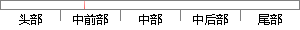

Windows Hello不仅比输入密码更加方便，也更加安全。
片段位置图

相似结果|
相似片段 1：从现在起．RsA技术可以确保只有授权用户方可进入微软windows桌面系统和windows网络域。这一创新认证解决方案．不仅为个人用户带来了方便和安全的新方法，而且为企业级用户创造了更加安全的商业
相似片段 2：本文介绍的装置提供了一种全新的账号验证方式，通过用户电话或手机的拨号键输入密码或验证码，使用户验证更加方便、快捷和安全。一、基于通讯设备的用户账号安全验证方式解基本内容用户在验证网页输入验证号码
|
※ 片段修改建议 ※
近似词参考：- 不仅：不但
- 密码：暗码
- 更加：加倍 越发 更为
- 方便：便利 利便 轻易
- 更加：加倍 越发 更为
- 安全：平安 宁静
系统自动生成语句：Windows Hello不但比输入暗码加倍便利，也加倍平安。
注：本片段修改建议为系统自动生成，仅供参考。